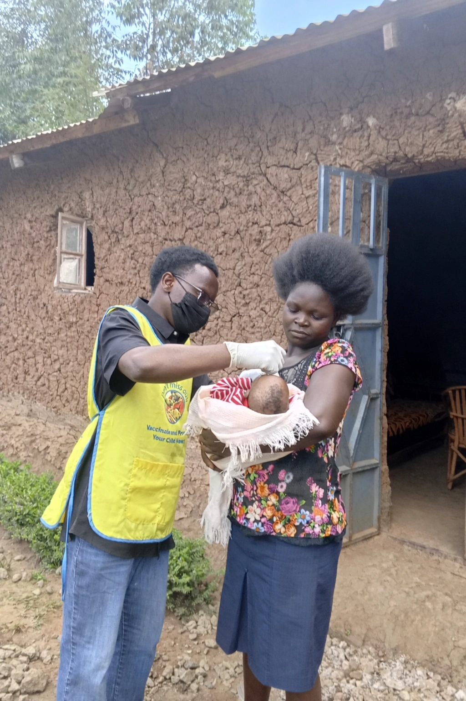

To be the change is to face the work others ignore, to speak when silence is easier, and to take responsibility for making the world better — starting today. — Escriva Josemaria
He has worked across hospital systems, NGOs, UN-affiliated programs, and grassroots organizations in Kenya, contributing to community health strengthening, emergency response, vaccination campaigns, and monitoring, evaluation, accountability, and learning systems. His work emphasizes evidence-based decision making, participatory approaches, and real-time feedback mechanisms that improve service delivery and health outcomes.
Escriva has supported national and international initiatives including WHO polio eradication campaigns, UNDP communications and outreach, and Red Cross community health promotion. He has collaborated with hospitals, civil society organizations, and local governments to design and implement programs aligned with the Sustainable Development Goals, particularly in maternal and child health, mental health, and health system resilience.
As a researcher and writer, he has contributed to academic and professional publications on community mental health, development policy, and applied public health practice — combining field research, mixed-methods analysis, and storytelling to translate complex data into actionable insights.

He works to ensure that data systems do not exist in isolation, but serve as tools for listening to communities, informing adaptive management, and strengthening trust between service providers and beneficiaries.
His practice recognizes that effective health interventions must balance quantitative evidence with qualitative insight, institutional requirements with community realities, and global frameworks with local knowledge. By integrating real-time data, community feedback mechanisms, and participatory decision making, Escriva contributes to programs that are not only technically sound but socially legitimate and sustainable.
At the core of his work is a commitment to dignity, equity, and learning as drivers of resilient health systems — approaching public health not merely as service delivery, but as a collaborative process of problem-solving that evolves through reflection, accountability, and continuous engagement with the communities it aims to serve.
His academic training combined public health theory with applied community-based practice — emphasizing health systems strengthening, social determinants of health, epidemiology, development studies, and participatory approaches to community engagement.
In addition to formal university training, Escriva has completed extensive professional development with UNICEF, the Kenya Red Cross Society, and global learning platforms. These programs covered child safeguarding, prevention of sexual exploitation and abuse, humanitarian principles, emergency preparedness and response, project and financial management, monitoring and evaluation, evidence co-creation, and public health reporting.
This continuous learning has allowed him to adapt international standards and best practices to local realities, particularly in resource-constrained and emergency settings — remaining equipped to meet communities where they are.
Available for collaboration, research partnerships, and consulting.